20260923-recovery-supervision-v4: settled folding successes Every episode the campaign ran is counted in the table; only episodes whose settled terminal verdict from the LeHome checker is success are shown below. "Ever" counts folds the latched checker passed at some step, including ones that came undone before the settle check; they are not shown as successes. Each caption names the Slurm task, seed and the digest of the rollout record it comes from; media/INDEX.json hashes every file.
policy · run phase horizon settled ever a1-step000100-r1 benchmark H10 2/8 2/8 a2-step000250-r1 benchmark H10 4/8 4/8 a2-step000250-r1 benchmark H50 3/8 4/8 a2-step000250-r2 benchmark H10 4/8 4/8
a1-step000100-r1 · dev05_h10_Pant_Short_Seen_7 a1-step000100-r1 · benchmark · dev05_h10_Pant_Short_Seen_7 · Pant_Short_Seen_7 · seed 205 · H10 · terminal conditions 4/4 · settled success · Slurm 21402811_10 · rollout.json sha256 b99c2d473d45…
top camera final triptych: left wrist / top / right wrist 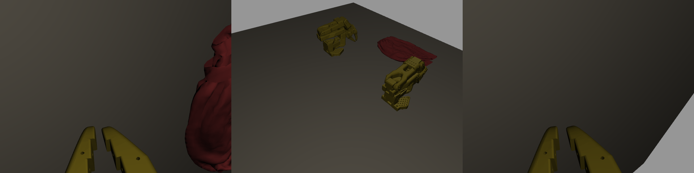
a1-step000100-r1 · dev07_h10_Pant_Short_Seen_9 a1-step000100-r1 · benchmark · dev07_h10_Pant_Short_Seen_9 · Pant_Short_Seen_9 · seed 207 · H10 · terminal conditions 4/4 · settled success · Slurm 21402803_14 · rollout.json sha256 c54ef18fb751…
top camera 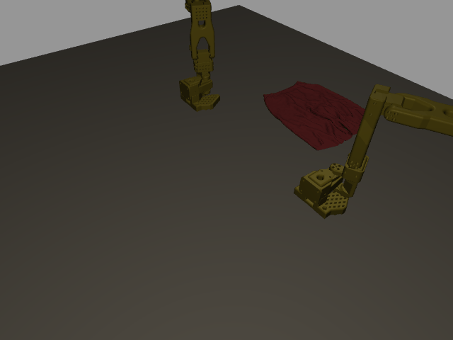
final triptych: left wrist / top / right wrist 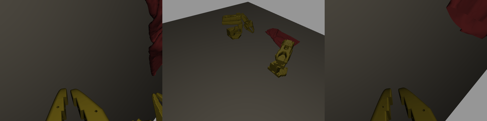
a2-step000250-r1 · dev02_h10_Pant_Short_Seen_3 a2-step000250-r1 · benchmark · dev02_h10_Pant_Short_Seen_3 · Pant_Short_Seen_3 · seed 202 · H10 · terminal conditions 4/4 · settled success · Slurm 21403299_4 · rollout.json sha256 27ad436d7a7f…
top camera final triptych: left wrist / top / right wrist 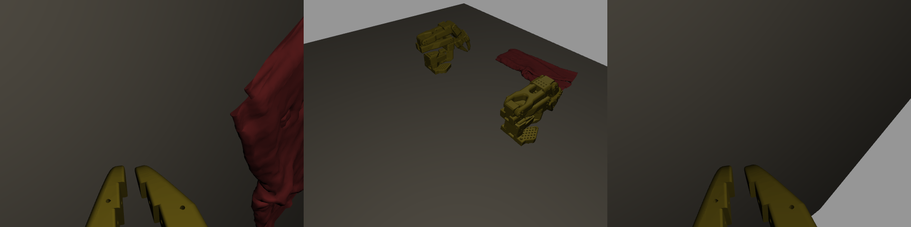
a2-step000250-r1 · dev02_h50_Pant_Short_Seen_3 a2-step000250-r1 · benchmark · dev02_h50_Pant_Short_Seen_3 · Pant_Short_Seen_3 · seed 202 · H50 · terminal conditions 4/4 · settled success · Slurm 21403411_5 · rollout.json sha256 953699a8e650…
top camera final triptych: left wrist / top / right wrist 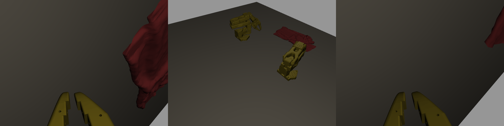
a2-step000250-r1 · dev04_h50_Pant_Short_Seen_7 a2-step000250-r1 · benchmark · dev04_h50_Pant_Short_Seen_7 · Pant_Short_Seen_7 · seed 204 · H50 · terminal conditions 4/4 · settled success · Slurm 21403426_9 · rollout.json sha256 4ae6dd910369…
top camera final triptych: left wrist / top / right wrist 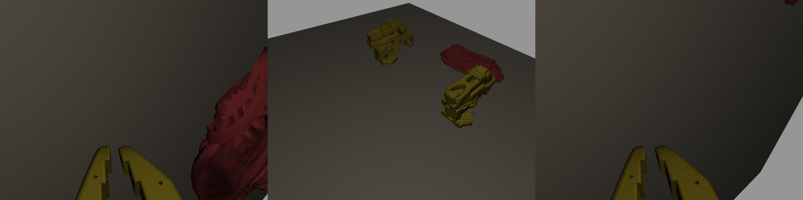
a2-step000250-r1 · dev05_h10_Pant_Short_Seen_7 a2-step000250-r1 · benchmark · dev05_h10_Pant_Short_Seen_7 · Pant_Short_Seen_7 · seed 205 · H10 · terminal conditions 4/4 · settled success · Slurm 21403328_10 · rollout.json sha256 90d2c5bec816…
top camera final triptych: left wrist / top / right wrist 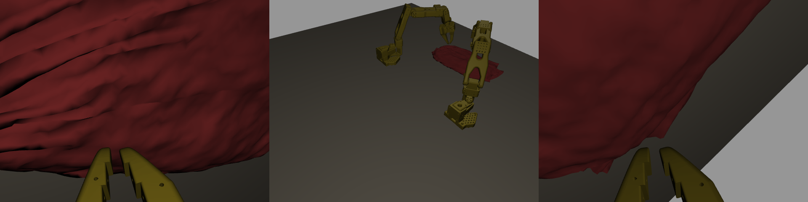
a2-step000250-r1 · dev05_h50_Pant_Short_Seen_7 a2-step000250-r1 · benchmark · dev05_h50_Pant_Short_Seen_7 · Pant_Short_Seen_7 · seed 205 · H50 · terminal conditions 4/4 · settled success · Slurm 21403431_11 · rollout.json sha256 e9a6db1e541c…
top camera final triptych: left wrist / top / right wrist 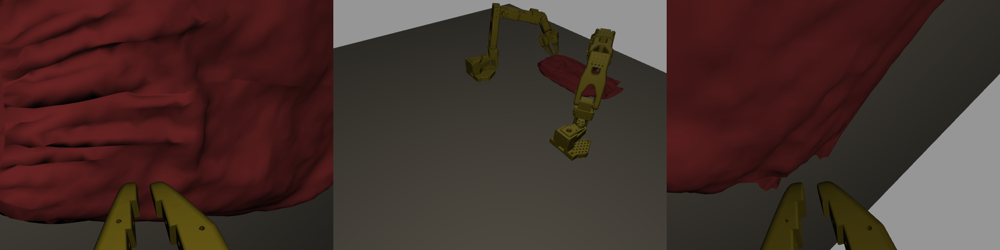
a2-step000250-r1 · dev06_h10_Pant_Short_Seen_9 a2-step000250-r1 · benchmark · dev06_h10_Pant_Short_Seen_9 · Pant_Short_Seen_9 · seed 206 · H10 · terminal conditions 4/4 · settled success · Slurm 21403329_12 · rollout.json sha256 693db38dda63…
top camera 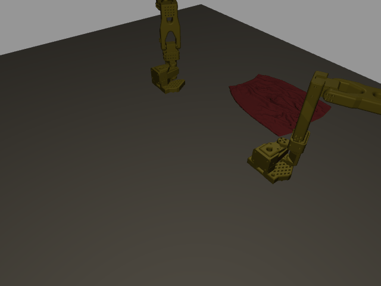
final triptych: left wrist / top / right wrist 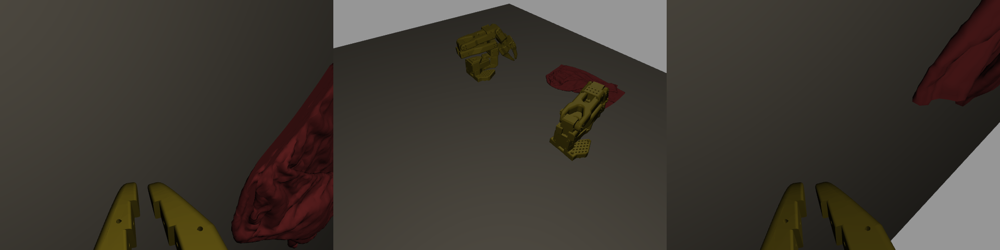
a2-step000250-r1 · dev07_h10_Pant_Short_Seen_9 a2-step000250-r1 · benchmark · dev07_h10_Pant_Short_Seen_9 · Pant_Short_Seen_9 · seed 207 · H10 · terminal conditions 4/4 · settled success · Slurm 21403295_14 · rollout.json sha256 0408edbf146e…
top camera final triptych: left wrist / top / right wrist 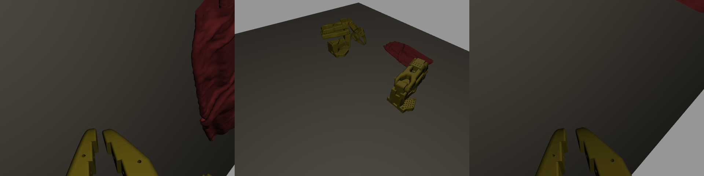
a2-step000250-r2 · dev02_h10_Pant_Short_Seen_3 a2-step000250-r2 · benchmark · dev02_h10_Pant_Short_Seen_3 · Pant_Short_Seen_3 · seed 202 · H10 · terminal conditions 4/4 · settled success · Slurm 21403372_4 · rollout.json sha256 2c8b246a1419…
top camera final triptych: left wrist / top / right wrist 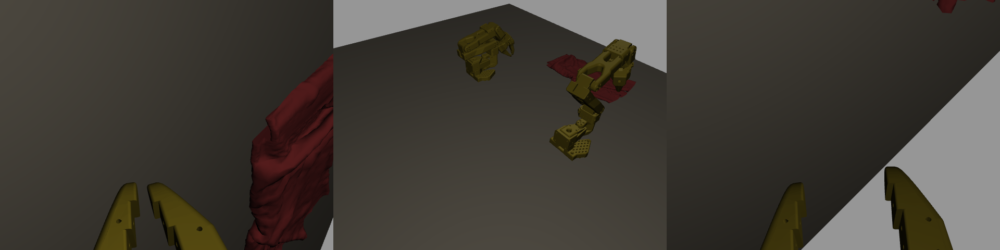
a2-step000250-r2 · dev04_h10_Pant_Short_Seen_7 a2-step000250-r2 · benchmark · dev04_h10_Pant_Short_Seen_7 · Pant_Short_Seen_7 · seed 204 · H10 · terminal conditions 4/4 · settled success · Slurm 21403383_8 · rollout.json sha256 4f6334fdc064…
top camera final triptych: left wrist / top / right wrist 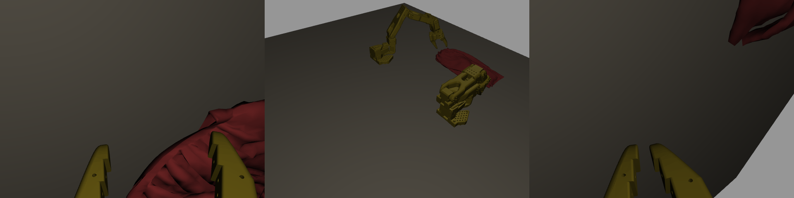
a2-step000250-r2 · dev05_h10_Pant_Short_Seen_7 a2-step000250-r2 · benchmark · dev05_h10_Pant_Short_Seen_7 · Pant_Short_Seen_7 · seed 205 · H10 · terminal conditions 4/4 · settled success · Slurm 21403387_10 · rollout.json sha256 a64c4db05ad1…
top camera final triptych: left wrist / top / right wrist 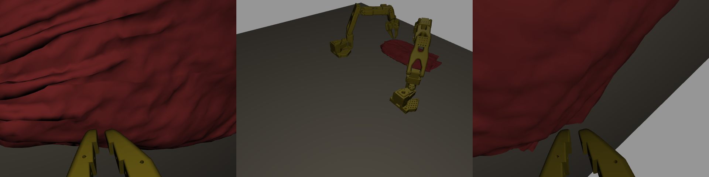
a2-step000250-r2 · dev07_h10_Pant_Short_Seen_9 a2-step000250-r2 · benchmark · dev07_h10_Pant_Short_Seen_9 · Pant_Short_Seen_9 · seed 207 · H10 · terminal conditions 4/4 · settled success · Slurm 21403368_14 · rollout.json sha256 90151997e99f…
top camera final triptych: left wrist / top / right wrist